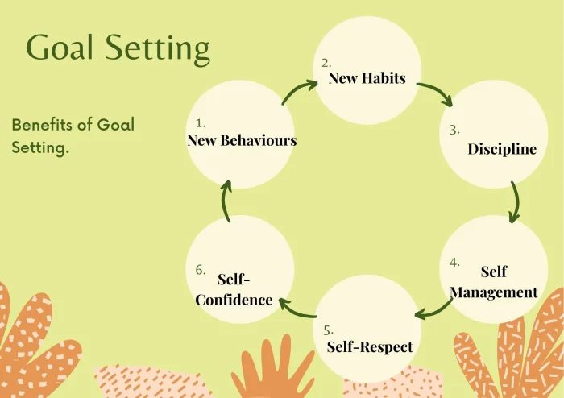
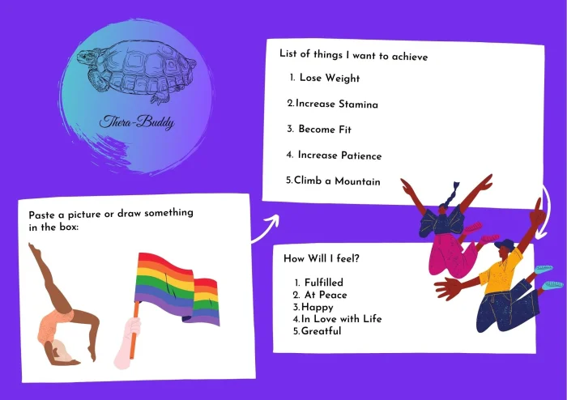
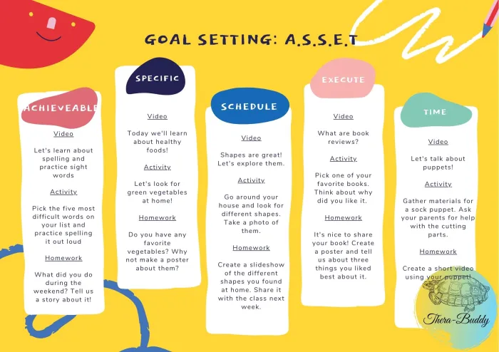
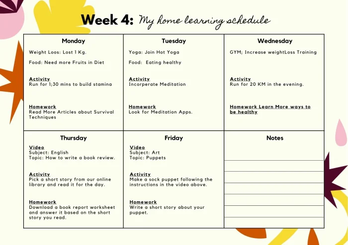
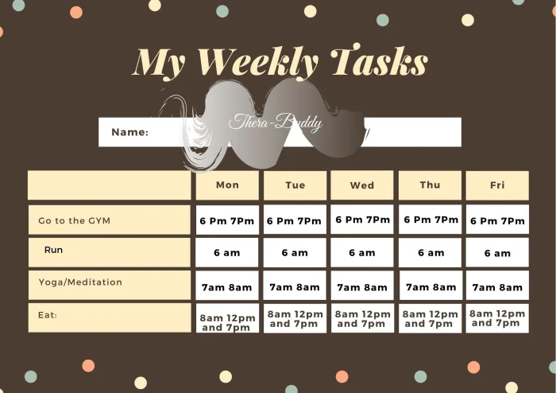

What is Goal Setting and How to Set Realistic Goals
What is Goal Setting and How to Set Realistic Goals? What does goal setting mean and do? How often should you set goals and revisit them? The answer to all these questions can be found here.
Goals Setting does not have to be mundane or boring. You can be as creative as you wish to be. Make sure you have some stationary ready with you. As the post proceeds, you may want to start setting realistic goals along with me.
How to Set Goals Realistically?
Why is Goal Setting Important?
Goal setting is important because it gives direction to your thoughts, desires and dreams. It allows you to measure things that you would not measure otherwise. Setting specific and realistic goals can make you more mindful of your actions.
Goal Settings also encourage new behaviours, habits, self-management and discipline. They keep us on track. They can be a motivation in themselves. It gives us meaning and purpose to work towards it and not live life like a drifter. Setting goals lead us to future success by focusing on the present and builds self-confidence and self-respect.
Benefits of Goal Setting.

What is Goal Setting?
Goal Setting means putting wishes on paper. It is, in short, the list of things that you want to achieve in life. But do not confuse it with a bucket list. A bucket list means pretty much the same thing but, in goal settings, one has to get really specific and precise. You literally make a timeline. And then, you take certain actions, change certain behaviours and adopt new habits and behaviours.
What does Goal Setting Do?
By setting goals what we really do is put out a plan that was in our mind on a piece of paper. By doing this we have now officially spoken our desires out loud and given a message to our brain on what specifically needs to be done. What else it does do? By putting it on paper and placing it in an area of the room that is frequently visited and accessed you are reinforcing all that you are committed to achieving. It works as a visual reminder for your mind to be constantly motivated and work towards it. By setting it constructively you are actually setting a road map that is measurable.

How to Set Realistic Goals Effectively?
Your Goals are your A.S.S.E.T. Follow the A.S.S.E.T model to set realistic goals effectively.

-
A = Achievable:
To be able to accomplish your goals, first, they have to be achievable. For example, if your goal is to go mountain climbing, sure you can do that. But you certainly cannot do that tomorrow or in a week or even a month until and unless you are a mountain climber and have built enough stamina and energy to sustain those harsh climates.
Goals not only have to be achievable but realistic and or believable too. Mainly believable to yourself. If you doubt your own capabilities then it is obvious that your mind will not work towards achieving it with the fear of failure which in turn would create stress. So in this case, If my goal is to climb a mountain then I would give myself enough time and train my mind and body to be able to achieve and believe in my goals.
-
S = Specific:
Remember this point while setting a goal. Be very very specific while setting your goals. Our subconscious mind does not respond well to ambiguity. If you give specific instructions to your mind it is easy for the mind to follow the steps and work towards them.
Let's refer to the mountain climbing example. Now, I will get really specific and say I want to climb Mount Everest. I will get really specific and say on the 15th of September 2025 I will start to climb (of course considering I have checked the schedules and the available dates). I will also be very specific on the kinds of training I need to follow like resistance training, muscle flexibility, lighter meals, joining a gym and getting a personal trainer. etc. You see how specific I got here.
-
S = Schedule:
Third, along with getting specific, it is very important to focus on a schedule. Most goal-setting planners completely ignore this very important step. It is useless to set your goals, pen them down specifically and then find yourself lost, not knowing how to actually follow them.
That's when this scheduling process works at its best. Time to refer to that example again. So now I know I want to climb Mount Everest on the 15th of September 2025 for that I figured I need some kind of training to build my mind and body. Now it's time to schedule.
This is how it goes. Tomorrow, "I will enrol myself on a gym and get a personal trainer and discuss my needs and expectations with regards to training. Every day from 6 pm to 7 pm I will go to the gym. Each morning I will wake up at 6 AM and go for a run. I will schedule a time for meals breakfast at 8 am lunch at noon and dinner at 7 pm. After 2 months 27th October, I will join yoga and meditation classes for flexibility and mind-body alinement. Every Sunday from 2 pm to 3 pm I will read articles about Mount Everest, from 4 pm to 5 pm, I will also watch youtube videos on survival techniques and healthy tips on this subject and collect as much information as I can."
So, see what I did again. Not only did I get specific I also scheduled time for each activity. What you are doing by scheduling is, you are giving instructions to yourself, you are also making space for those activities in your life and your calendar. Your brain will start anticipating those activities and prepare you to follow them.
-
E = Execute:
Fourth, time to execute your schedule. So now is the time to start executing everything you planned. Now is the time to enrol yourself on a gym or whatever it is that you have scheduled. It is time for action and to start following your plan. I am going to refer to the Newtons Law here. Newton's first law states that every object will remain at rest or in uniform motion in a straight line unless compelled to change its state by the action of an external force. In simple words, an object at rest stays at rest and an object in motion stays in motion unless obstructed by an external force. That's what we aim to do. "Stay in Motion."
Agreed at first it might be difficult but remember it is possible and that's why you paste your goals in a place where you most frequently view them. Initially, my strong suggestion is don't aim for perfection or quality instead aim for consistency and practice to make it permanent. Quality will come with time. By being consistent you are forming a new habit.
Once it becomes a habit it's easy to follow. Example time. Maybe I cannot work out for an hour, I find it difficult to sustain for an hour, I will irrespectively do the task even if it means for 15 minutes and sit for the remaining 45 minutes at the gym. (works as a visual reinforcer). I will follow the same scheduled time (6 pm-7 pm) and slowly increase my time to 30 minutes then 40 minutes. Because remember when you schedule, your mind is already anticipating your actions, you are in motion and not at rest so eventually, it will prepare you for whatever it is that you have planned.
-
T = Time Specific:
The fifth is time-specific. After you have specific goals, schedules are set for those goals and you have started the execution as well now it's time to start getting even more specific. Now is the time to evaluate and reexamine your goals and check if it has become a new habit and set a time limit.
Referring the example, "I have started going to the gym, I am eating healthy but to be able to climb Mount Everest I need to lose say 10 Kgs in 6 months, Increase my muscle weight and reduce my fat weight and I will check all of this on May 31st 2021. I need to increase my resistance training to a minimum of 2 hours a day. I will check for an increase in my stamina at about the same time. Schedule smaller climbs maybe Jan 2022. Closer towards the scheduled date, say 1st January 2025 I will start looking for bookings and equipment I need, Book flight tickets and Visa on the 1st Feb 2025."
This is also the time to check and see if any of the goals that you have set needs a change of plan or schedule. Every 6 months revisit your goals to update if need be.


Remember, change is the only thing that is constant. Don't be harsh on yourself for taking the time to adjust. Forgive yourself for the mistakes that you make on the way. Mistakes are only mistakes if you believe them to be. There is no success without mistakes. There is no learning without mistakes. And there are no failures they are only feedback.
Get constructive feedback from your friends, families, colleagues and most importantly from yourself. Judging yourself will only lead to further judgement. But, analyzing your mistakes, actions and taking responsibility for yourself and your actions will lead you to growth, success and inner peace.
In the next blog read about how to set goals based on your purpose and values. Set Long Term, Medium Term and Short Term Goals. When you set your goal based on values and purpose they are more passionate oriented and the chance of fulfilling goals based on your purpose can be fruitful and meaning full.
I hope you enjoyed reading this article on how to set your goals. If you do need a highly experienced life coach and hypnotherapist from the comfort of your home, I am a Certified online life coach | a Clinical Hypnotherapist and a Psychotherapist based in Dubai, UAE. Allow me to help you set meaningful, purpose-driven and passionate goals.
Summary:
- Set your goals following the A.S.S.E.T plan.
- A= Achievable
- S= Specific
- S= Schedule a timetable
- E= Execute your plan
- T= Time Specific, Form a timeline